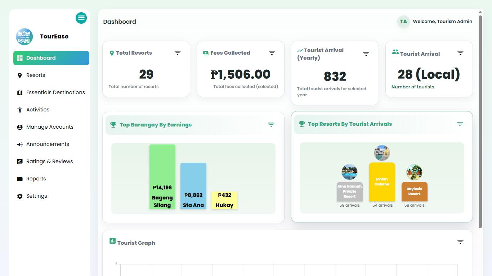

Get to Know Me
Hello! I'm Alyssa, a recent Bachelor of Science in Information Technology graduate with a passion for front-end development and creating user-friendly digital experiences.
Throughout my academic journey, I worked on web development, system design, software testing, and documentation. I enjoy learning new technologies and continuously improving my technical and problem-solving skills.
Location
Batangas, Philippines
Education
BS Information Technology
Status
Open to Opportunities
Interests
Frontend • UI Design
Technologies I Work With
Here are some of the technologies and tools I've used in academic projects and during my internship.
Frontend
Backend
Database
Tools
Featured Projects
Here are some of the projects I've developed throughout my academic journey.



TourEase
Capstone Project
A tourism assistance platform that helps visitors discover destinations, QR check-ins, navigation, emergency assistance, and resort recommendations.
Insurance Management System
Internship Project
A web-based system developed during my internship to manage applicants, appointments, availability schedules, and administrative tasks.
My Journey
A quick overview of my academic and professional journey.
Started BS Information Technology
I began my journey in Bachelor of Science in Information Technology (BSIT) where I built a strong foundation in Microsoft Office, programming, web development, databases, and software engineering. Throughout my academic journey, I consistently took on the role of Front-End Developer in our group projects, focusing on creating responsive and user-friendly interfaces. I also gained hands-on experience in application development, software testing, debugging, and problem-solving while continuously improving my technical and collaboration skills.
Internship
Completed 500 hours of internship at Pru Life UK – Black Orcas in the IT Department, where I gained valuable professional experience under the guidance of my manager and mentor. As part of the development team, we built an internal system for the company, and I served as the Front-End Developer, focusing on designing and developing responsive user interfaces. Throughout the internship, I also contributed to system development, software testing, deployment, documentation, and client presentations while strengthening my teamwork, communication, and problem-solving skills in a professional work environment.
Graduated
Successfully earned my Bachelor of Science in Information Technology, majoring in Business Analytics. Throughout my academic journey, I developed a strong foundation in frontend development, web technologies, and business analytics. As a recent graduate, I am now seeking my first professional opportunity where I can apply my technical skills, continue learning, and contribute to meaningful projects as a Front-End Developer or IT professional.
Certificates
Certifications and online courses that have strengthened my technical knowledge and skills.
HTML & CSS
SoloLearn
December 2, 2022Data Fundamentals
IBM SkillsBuild
November 13, 2024Artificial Intelligence Fundamentals
IBM SkillsBuild
November 13, 2024Applied Data Science with Python
Cisco Networking Academy
November 20, 2024Big Data Foundations
IBM SkillsBuild
November 16, 2024BSIT Graduate
Batangas State University
The National Engineering University
ARASOF-NASUGBU